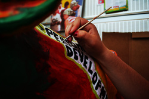
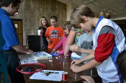
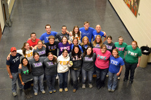
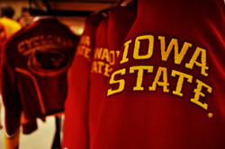
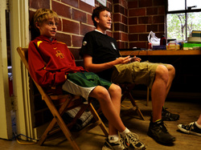

__Collegiate 4-H - President

_I
have been a member of 4-H since 3rd grade. My involvement in this
organization has fundamentally improved me as a person through my
development. I hope to return as much as I can to the program through leadership and volunteerism within the program.
As president of ISU C4-H, I have two primary goals: To establish lasting connections between our club and local 4-H leaders in order to facilitate club development and service to youth in the 4-H program; and to instantiate tools and protocols to further fluid cooperation among the officer team and between the officer team and club.
As president of ISU C4-H, I have two primary goals: To establish lasting connections between our club and local 4-H leaders in order to facilitate club development and service to youth in the 4-H program; and to instantiate tools and protocols to further fluid cooperation among the officer team and between the officer team and club.
_Eta Kappa Nu, Nu Chapter - Vice President and Photographer
HKN/IEEE's booth at Engineering Middle School Day.
_As
vice president of Nu Chapter of Eta Kappa Nu, electrical and computer
engineering honor society, I hope to foster increased member involvement
in chapter activities and increase undergraduate knowledge of our
organization in order to expand the club's membership on a long-term
scale. I spearheaded an initiative to provide mock technical interviews to undergraduates in our department through HKN in pursuit of this goal. I have also worked on improving HKN company relations through our members, defining the transitional and HKN record archival process, and rewriting our out-of-date constitution.
_Tau Beta Sigma, Theta Xi Chapter - Secretary
_Tau
Beta Sigma is a music service organization devoted to serving the bands
at Iowa State University. I have been actively involved in band since
sixth grade, performing in dozens of ensembles and holding a variety of
leadership positions, from drum major to music arranger.
As the 2010-2011 secretary of Theta Xi, I strove to provide accurate records of the chapter's meetings and attendance, as well as working with the executive team to provide the best experience possible to our members. I introduced the use of electronic forms and Google Docs into the recording process to facilitate this.
I served as the parliamentarian, leading the revision process of our Joint constitution and archiving old copies in a permanent format. I currently serve as the webmaster, revamping our website and facilitating the sustainable storage of chapter information and knowledge using tools like Dropbox and Google Docs.
As the 2010-2011 secretary of Theta Xi, I strove to provide accurate records of the chapter's meetings and attendance, as well as working with the executive team to provide the best experience possible to our members. I introduced the use of electronic forms and Google Docs into the recording process to facilitate this.
I served as the parliamentarian, leading the revision process of our Joint constitution and archiving old copies in a permanent format. I currently serve as the webmaster, revamping our website and facilitating the sustainable storage of chapter information and knowledge using tools like Dropbox and Google Docs.
_Iowa State University Cyclone Football "Varsity" Marching Band - Baritone guide
_Becoming
a member of the ISUCF"V"MB is not a decision to be taken lightly.
Membership requires 10+ hours each week during an already busy semester,
but provides excellent experiences that will never be forgotten.
Becoming a guide in the band, while it requires further time commitment,
is a very rewarding experience. I have the opportunity to shape the
success of the season. Guides in the ISUCF"V"MB are personally
responsible for teaching the basics of marching to first-year members
and ensuring the quality of rehearsal and performance throughout the
season. Beyond these standard duties of the role, for instance, I have
taken the initiative to fix a security flaw in our members' only website
and set up tools to provide easier online sign up for audition times. I also authored the new online attendance system for the marching band.
_Iowa 4-H Youth Tech Team - Mentor/facilitator/chaperone
Preparing for Tech Team interviews at the ISF 2011.
_"The
Iowa 4-H Youth Tech Team is a fun group of teenagers from across Iowa
that come together to pool our technology skills to make the best
better." The team meets physically four times a year and conferences via
Adobe Connect monthly. The focus areas of the team shift from
year-to-year, depending on the interests of the youth involved. During
my two years of involvement with the team, we have worked with video
editing, photography, interviewing, app development, and programming,
among others. I often lead conference chats and develop workshops for
team members around their interest areas. I believe that fostering an
interest in engineering and technical fields in youth is a powerful
motivator for success later in life. Combining my active involvement in
the 4-H program with my passion for engineering through Teach Team has
been a rewarding experience that I plan on continuing as long as I am
near the Iowa 4-H Program.
_Iowa State University Honors Program
_As
a sophomore (fall 2010) I served as a First-year Honors Program seminar
co-leader. My co-leader and I were in charge of creating 16 weeks of
lesson plans for a class of 12 freshman Honors students. Our sessions
focused on several components intended to broaden their views and
introduce them to university life, such as service, diversity, resumes,
and academics.
_Destination Iowa State
_DIS is four-day University Admissions program that introduces students
to ISU and the Ames community through service, workshops, and fun
activities. Hundreds of first-year students take part each August. I
have served as a DIS leader twice. I find that DIS is an excellent way
to make new friends and learn everything necessary to have a great first
day of classes. Being in the marching band, serving as DIS leader is
an extra challenge, as it requires careful coordination of time and
resources in order to provide a meaningful experience to my team (all of
whom are also in marching band) while making sure they are rested
enough to succeed in band camp, which completely overlaps the DIS time
frame.